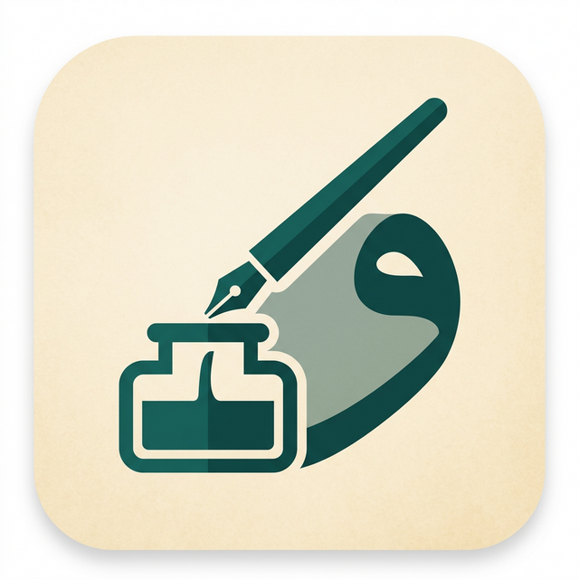
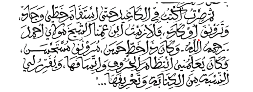

Une plateforme pour lire, transcrire et préserver les manuscrits arabes, ensemble.

Le fac-similé reste au centre. On observe l’écriture, le contexte et les détails qui donnent du sens au texte.
Chaque contribution enrichit un dataset utile aux étudiants, aux chercheurs et aux outils de lecture automatique.
Proposez une lecture fidèle de la ligne sélectionnée.
Importez le texte publié, cherchez une correspondance et gardez la ligne manuscrite visible pour décider avec confiance.
Apprenez, contribuez et transmettez le patrimoine manuscrit au monde entier.